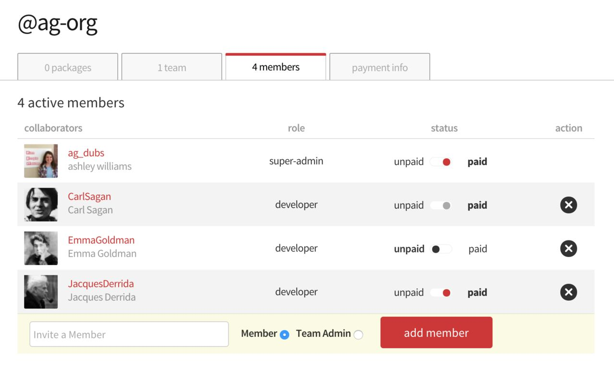

Sponsorships
Sponsorships is the name of how either an organization or an individual can pay money such that they have access to using or publishing Private Packages.
Sponsorship Types

Let's say we have an Organization, @ag_org. This Organization
was created by user @ag_dubs, and therefore she is the Super
Admin.

Being a Super Admin, she adds 3 members to her team:
- Jacques Derrida
- Carl Sagan
- Emma Goldman
There are three types of Sponsorship that can occur:
- Paid by Current Organization
- Paid by Self or Another Organization
- Not Paid
Paid by Current Organization
When Super Admin, @ag_dubs, added JacquesDerrida to the Organization,
JacquesDerrida did not already belong to an organization nor did they have a
subscription to private packages.
By default, when the Super Admin added him to the Organization, JacquesDerrida
was set as a member of the Organization, paid by the current organization.
This appears in the UI like this:
- Because
JacquesDerridais adeveloperin the org, they can:- Be added to any/all of the Organization's teams,
- See the teams they are on,
- See the other members of the team,
- See the packages (both public and private) those teams grant access to,
- Because
JacquesDerridais sponsored, they can:- Install, publish, and unpublish the private packages to which they have access
JacquesDerrida cannot:
- See all of the Organization's teams
- See all members of the Organization
Paid by Self or Another Organization
Paid for by Another Organization
When Super Admin,
@ag_dubs, addedCarlSaganto the Organization,CarlSaganalready belonged to another Organization (@nasa-org, duh).By default, when
CarlSaganwas added to the Organization, he was set as a member of the Organization, paid by another scope. This appears in the UI like this:As a result,
CarlSaganhas the same permissions asJacquesDerrida, above.Paid for by Self
As a subscriber to Private Packages, you can understand your sponsorship as "sponsoring yourself". As a result, a subscriber to private packages would have had the same default behavior as occured for
CarlSagan, i.e., the previous sponsorship would trump the possibility of a new Organization sponsorship. A subscriber to private packages will appear in the Organization dashboard as someone who ispaidbutnot by the current org. This appears in the UI the same as above:Changing Sponsorship
If a user is a subscriber to private packages, this sponsorship scope will trump all other potential sponsorships. If you would like to change this, i.e., offer sponsorship to a user who already has another sponsorship (org or private pkgs), please contact support@npmjs.com.
Not Paid
EmmaGoldman, at the time that@ag_dubsadded them to the@ag_orgOrganization, did not subscribe to private packages nor did they belong to another Organization. This means that they did not have any previous sponsorships.Like
JacquesDerrida,EmmaGoldmanwas set as paid by the current organization,@ag-orgby default. However, Super Admin@ag_dubsopted to cancel@ag-org's sponsorship ofEmmaGoldman. This status appears in the UI like this:
- Because
EmmaGoldmanis adeveloperin the org, they can:- Be added to any/all of the Organization's teams,
- See the teams they are on,
- See the other members of the team,
- See the packages (both public and private) those teams grant access to,
- Because
EmmaGoldmanis not sponsored, they cannot:- Install, publish, and unpublish the private packages to which they have access
EmmaGoldmancan:- Collaborate on and publish public, scoped or unscoped packages, that their team membership grants them access to
EmmaGoldmancannot:- See all of the Organization's teams
- See all members of the Organization
- Collaborate on and publish any private packages, even if their team membership would otherwise grant them access
- Because